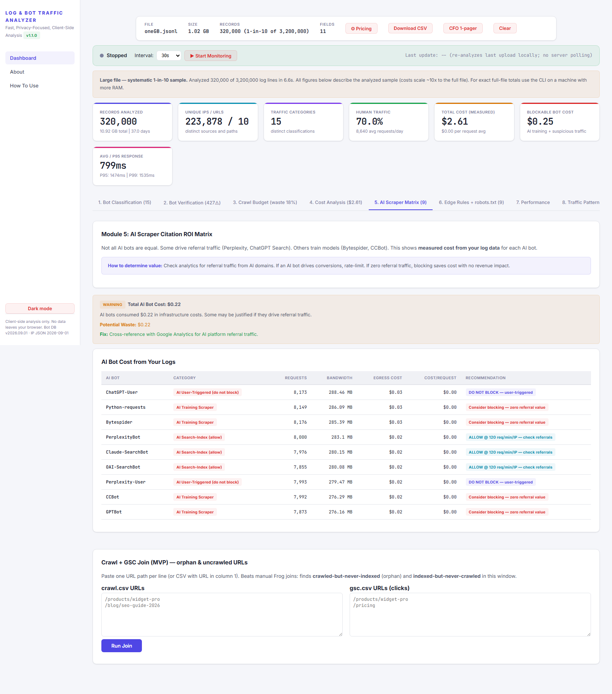

← Back to free analyzer (no upload)
GPTBot vs OAI-SearchBot: same vendor, opposite rules
GPTBot trains models — zero live citation loss if you block it. OAI-SearchBot powers ChatGPT Search citations (crawl-to-referral ~85:1). Block it and citation share drops in 1–2 weeks. The analyzer splits them automatically across 75 signatures and prices each side separately.
The rule that gets it right
# robots.txt — training blocked, search allowed
User-agent: GPTBot
Disallow: /
User-agent: OAI-SearchBot
Allow: /// Cloudflare WAF custom rule: challenge training only
(http.user_agent contains "GPTBot") // Block / Managed Challenge, 60/min
# OAI-SearchBot: ALLOW at 120/min, 429 + Retry-After only — never hard blockProof from a real log
On a 1.02 GB / 3.2M-line run the tool streamed a systematic 1-in-10 sample (320,000 lines in 6.6 s), measured $2.61 total with $0.25 blockable (training only). Search-index and user-fetch are never counted as blockable — asserted in tests. Run the 1-click 10k demo and check the AI Scraper Matrix tab (red = training, cyan = search-index, blue = user-triggered).

Edge cases (2026)
- OAI-AdsBot: allow-listed — blocking breaks ChatGPT shopping revenue checks.
- ChatGPT-User: user-triggered, ignores robots ~54% — do NOT throttle (300/min abuse ceiling only).
- Verify: vendor IP JSON (
data/bot-ips.json, dated 2026-09-13, full CIDRs + IPv6) = VERIFIED; prefix-only = heuristic low-confidence.